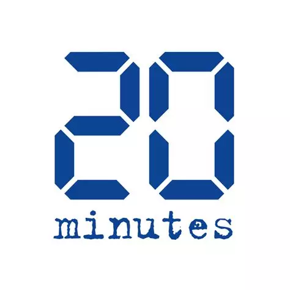
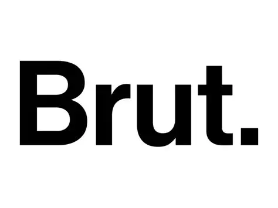
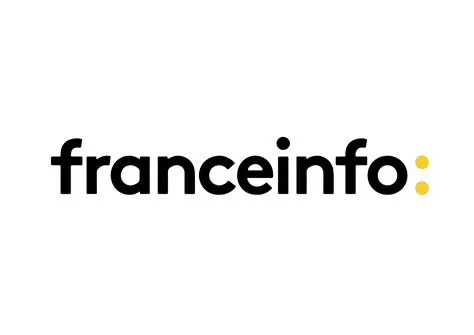
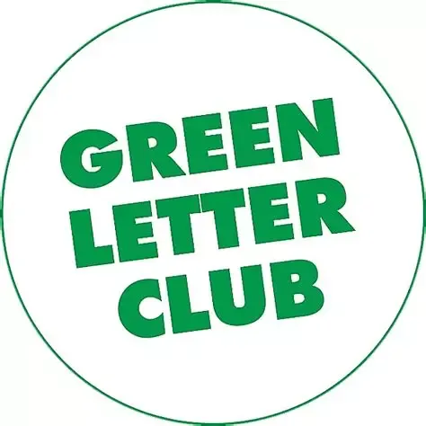

Dans les media
Retrouvez ici tribunes, interviews, débats et autres prises de paroles parus dans les media, un autre facon de se familiariser avec le sujet et de comprendre le positionnement de AÉRO DÉCARBO.
|
Tribune - L’aviation doit anticiper la modération du trafic, plutôt que de la subir demain
(Matthieu Auzanneau (The Shift Project), Aurélien Bigo (Chercheur sur la transition énergétique des transports, Chaire Énergie et Prospérité), Jérôme du Boucher (Transport & Environment), Grégoire Carpentier (AÉRO DÉCARBO), Olivier Del Bucchia (AÉRO DÉCARBO), Jérôme Fontane (Enseignant-chercheur à l’Université de Toulouse), Nicolas Gourdain (Enseignant-chercheur à l’Université de Toulouse), Béatrice Jarrige (The Shift project), 10 Mars 2024)
-
A l'occasion de la prononciation du verdict du procès des militants de Greenpeace ayant repeint un avion en vert, nous nous sommes associés pour écrire cette tribune appelant le secteur aérien à considérer concrètement des trajectoires de moindre croissances, en premier lieu dans son propre intérêt.Nous affirmons que l'efficacité énergétique, l'utilisation d'énergie décarbonnée et la sobriété d'usage doivent se compléter, et non s'opposer, dans le double objectif d'attenuation des émissions et de résilience du secteur face au dérèglement climatique et à la raréfaction des ressources fossiles. Lire la tribune
|
|
|  |
Article - Est-on en train de jouer avec le feu dans la stratosphère ?
(20 minutes, Loïs Miraux (AÉRO DÉCARBO), 27 Septembre 2023)
+
Dans cet article, 20 minutes nous a interrogé sur l’impact des activités humaines dans la haute atmosphère. A noter une phrase ambiguë laissant penser que nous sommes alignés avec le discours général sur l’ « Avion Vert ».
Pitch 20 minutes APPRENTI SORCIER - On est aux confins de l’atmosphère, juste avant l’espace… Mais, même à cette altitude, la stratosphère n’échappe pas aux activités humaines. C’est même là que certains pensent gagner la bataille contre le changement climatique. A quel prix ? Lire l'article |
|
Tribune - Impact climatique de l’avion : « La technologie n’est qu’une partie de la réponse »
(Olivier Del Bucchia (AÉRO DÉCARBO), Grégoire Carpentier (AÉRO DÉCARBO), 14 Juillet 2023)
+
A l’occasion du Salon du Bourget 2023, Le Monde a publié une série de tribunes sur le sujet de l’aérien. Nous rappelons ici l'importance de considérer les émissions cumulées dans l'évaluation de l'impact de l'aérien (comme poru tout autre secteur d'ailleurs) et sa conséquence immédiate : la réduction des émissions ne peut attendre 2050, elle doit démarrer dès que possible afin d'être plus acceptable socialement et économiquement tout en restant dans un budget carbone compatible avec l'Accord de Paris. La sobriété d’usage et le progrès technologique sont deux leviers qui, plutôt que de s’opposer, concourent à l’atteinte de ce même objectif. Lire la tribune
|
|
|
Emission web - AÉRIEN : "L'objectif n'est pas de décarboner, c'est de croître"
(Nassira El Moaddem (Arrêt sur images), Isabelle Laplace (ENAC), Eva Morel (QuotatClimat), Olivier Del Bucchia (AÉRO DÉCARBO), 23 Juin 2023)
+
Une émission sur le traitement médiatique du sujet de l’aérien et de son impact, à l’occasion du Salon du Bourget 2023 et des annonces gouvernementales. Le titre de l'emission est une citation qui ne provient pas d'AÉRO DÉCARBO
Pitch Arrêt sur images : Politiques et entreprises de l’aéronautique le promettent : c’est sûr, l’avion sera totalement vert et décarboné d’ici 25 ans ! L'engagement fait rêver, répété à l'envi dans les médias à l'occasion de la réouverture du salon aéronautique du Bourget. Nous aimerons pouvoir voyager à l’autre bout du monde sans avoir honte des milliers de litres de kérosène déversés. Mais rares sont les fois où les décideurs du secteur de l’aérien et les dirigeants politiques nous expliquent dans le détail comment concrètement ils comptent y arriver. N'est-ce pas Guillaume Faury lui-même, patron d'Airbus, qui affirmait récemment dans la matinale de France Inter : "On va réussir à décarboner l'aviation, c'est évident !". L’enthousiasme médiatique autour des innovations technologiques de l’aviation mérite pourtant qu’on s’y attarde un peu. Qu’est ce qu’elles valent concrètement ces innovations ? Quelles réalités se cachent derrière les éléments de langage d’un secteur qui joue sa crédibilité ? Et qu’en est-il des flux aériens très rarement questionnés ? Pour répondre à ces questions, trois invités : Olivier Del Bucchia, ingénieur en aéronautique, cofondateur de l'association Aero Decarbo qui milite pour la transition écologique du secteur aéronautique, Isabelle Laplace, docteur en économie spécialisée en aéronautique à l'Ecole Nationale de l'Aviation Civile et Éva Morel, membre du collectif Quota Climat qui oeuvre pour un meilleur traitement médiatique des enjeux écologiques. Voir l'émission |
|
|  |
Reportage - Des avions plus écologiques, c'est vraiment pour bientôt ?
(Brut. nature & Jeanne Bosc Bierne (AÉRO DÉCARBO), 22 Juin 2023)
+
A l’occasion du Salon du Bourget 2023, Brut. nature nous a sollicité pour apporter notre éclairage sur les différentes pistes technologiques devant consuire l'émergence d'un "avion vert".
Le pitch Brut. : “Avion ultra-sobre”, “avion vert”, “avion à l’hydrogène” ou “à l’huile de cuisson”... On entend de plus en plus parler d’avions présentés comme plus écolos et on peut vite avoir du mal à suivre. Concrètement, où en sont ces avions alternatifs ? Et sont-ils suffisants pour faire face à l’urgence climatique ? On a voulu y voir plus clair en interrogeant Jeanne Bosc Bierne, contributrice au rapport “Pouvoir voler en 2050”. Voir le reportage |
|
Article - Salon du Bourget et écologie : prendre l’avion, le désir coupable
(Franck Bouaziz (Libération), Loïc Bonnifacio (AÉRO DÉCARBO), Olivier Del Bucchia (AÉRO DÉCARBO), 18 Juin 2023)
+
A l’occasion du Salon du Bourget 2023, Libération se posait aussi la question de la cohérence entre les trajectoires de croissance et de décarbonation, avec un questionnement d'entrée autour de la culpabilité de prendre l'avion.
Début de l'article : La culpabilité de voler se développe en même temps que la croissance du trafic aérien. Scrutées au salon aéronautique du Bourget qui s’ouvre ce lundi 19 juin, des solutions de décarbonation sont à l’étude mais elles s’avèrent insuffisantes... Lire l'article |
|
|  |
Interview - Salon du Bourget : la première édition depuis le Covid navigue entre reprise des commandes et promesses de sobriété
(Grégoire Lecalot (France Info), Olivier Del Bucchia (AÉRO DÉCARBO), 17 Juin 2023)
+
France Info souhaite aborder la question de la reprise du Traffic après de le COVID VS la sobriété, ceci bien sûr dans le contexte du Bourget 2023.
Pitch France Info : C’est l’heure de la reprise pour l’aéronautique. Le premier salon du Bourget depuis le Covid ouvre ses portes lundi 19 juin. Cette édition sera marquée par la redémarrage du secteur aérien, mais aussi par l’inquiétude face au défi climatique. Ecouter l'émission |
|  |
Podcast - AVIATION : Pourra-t-on encore voler en 2050 ?
(Grégoire Carpentier (AÉRO DÉCARBO), 28 Avril 2022)
+
Pitch Green Letter Club : Combustion de kérosène ou trainées de condensation : l’aviation participe au réchauffement de la planète tout en ne profitant qu’à une poignée de privilégiés. D’où cette question : pourra-t-on encore voler en 2050 ? Pour y répondre, nous recevons Grégoire Carpentier, ingénieur aéronautique, co-fondateur de Supaero décarbo, un collectif visant à décarboner le secteur aérien et qui a récemment publié un rapport sur le sujet avec le Shift Project. Ecouter le podcast
|